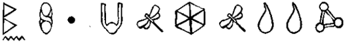

Anubis, Anubis, Anpu, Ienpw, Yinepu:
Eski Mısır’da ya köpek kafalı bir adam ya birbirine dönük iki köpek ya da bir mezarın önündeki kaideye oturmuş bir köpek olarak betimlenen cenaze tanrısı. Mezarların koruyucusu olduğu kabul edilirdi. Mumyalamanın simgesi olarak da görülür.
Cüce:
İskandinav folkloründe dağlarda, İrlanda Almanya’da madenlerde yaşayan, çoğunlukla deforme olmuş ya da çirkin olarak betimlenen kısa boylu, güçlü yaratıklar. Cüceler hayatı maden çıkararak geçer. Güneş ışığında taşa dönüşeceklerinden dolayı yüzeye çıkmazlar.
Elf:
Büyülü güçleri olan, küçük, çoğunlukla da muzip, perimsi yaratık. Başlangıçta insanlara can acıtmayan ama oldukça rahatsızlık veren minik oklar atan küçük, muzip varlıklardı. Ama Tolkien’in Yüzüklerin Efendisi’nden dolayı elfler fidan gibi ince ve uzun boylu, çok eski bir soy ve görkemli bir saygınlığa sahip varlıklar olarak da tanımlanırlar.
İskandinavya’da elfler Alfar olarak bilinir.
Elfler yeraltında koloniler halinde yaşayan neşeli yaratıklardır. Partiler vermeyi, müziği ve dans etmeyi severler ama müziklerini dinlerken yakalanan insanları kaçırırlar.
Gnome:
Yeraltında yaşayan, hâzinelere bekçilik eden, cücelere benzer peri sınıfına da giren varlıklardır. Genelde vejetaryendirler ve asla kaygılanmazlar. Bazıları muzurdur ve insanlara zarar verirler. Gnomelar sert hatlı, asla yaşlanmayan ve her zaman kukuleta takan, sakallı adamlar olarak tanımlanırlar.
Goblin:
Perilerin karşıtı olduğu düşünülen genelde kötü yaratıklardır. Goblinler genelde muziptir, şans bozarlar, kabuslara neden olurlar ve buna benzer küçük sıkıntılar yaratırlar ama bazıları tehlikeli hatta zaman zaman .ölümcül olabilir. Gülümsemelerinin insanın kanını dondurduğu, kahkahalarının sütü ekşitip ağaçlardaki bütün meyvelerin dökülmesine neden oldukları söylenir. Goblinler peri dünyasının kötü şöhretli hırsızlarıdır. Deforme olmuş vücutları ve kocaman gözleri vardır. Yeraltı mağaralarında yaşarlar.
Gremlin:
On beş ile elli beş santim arası boyda, minik perimsi yaratıklardır, ilk defa 1. Dünya Savaşı sırasında teşhis edildiler ama 2. Dünya Savaşı’nda daha çok popüler oldular. Başlangıçta makineler konusunda insanlara yardımcı oluyorlardı ama takdir edilmemelerinden dolayı sık sık uçaklarda mekanik sorunlara neden olarak ve bazı aletleri saklayarak kötüleştiler.
Gremlinlerin kendilerini eğlendirmek için yaşadıkları söylenir. Hırsız ve muziptirler ama tahrik edilmedikleri sürece tehlikeli değillerdir. Çok çapraşık espiri anlayışı olan soluk yeşil elfler gibi gözükürler.
Hag:
İnsanlara zarar vermek için esrarengiz büyü çalışmaları yapan, şeytanla beraber çalışan, korkunç yaşlı kadınlara benzeyen yaratıklardır. Haglar çoğunlukla büyücülerle beraber bulunurlar. Uykudayken göğüs ya da karınlarının üstüne oturarak insanlara binerler ve bunu yaparak kabuslar görmelerini sağlarlar, hatta devam ederlerse o insanı öldürürler.
Britanya’da, haglar kışın simgesi olan yaşlı kadınlardır; ilkbahar gelmeye yüz tuttuğunda genç, güzel kadınlara dönüşürler.
Ka-dalun:
Spritelara verilen başka bir isim.
Leprechaun:
Zeki, bağımsız küçük adamlara benzeyen, üç köşeli şapkalar giyen perilerdir. Çift yerine tek bir ayakkabı yapan ayakkabıcılar olarak da tanınırlar. Her leprechaunun gizli bir çömlek altını vardır.
Peri * Fairy * Faerie * Fay * Fae * Fee * Verry Folk * Farisees * Gentry * Wee Folk * Grey Neighbors:
“İlk bebek güldüğünde, gülücük bin parçaya bölündü ve parçalar hoplaya zıplaya etrafa dağıldılar. İşte bu perilerin başlangıcıydı.” - Sir James Matthews Barrie “Peri” kelimesi çok çeşitli anlamlara gelebilir. Geleneksel olarak, zeki, muzur ve büyülü güçleri olan, minnacık, insan şeklinde kanatlı yaratıklara gönderme yapar. Bununla beraber, “peri” kelimesi tam kesin olmayan bir şekilde eski inançlardaki, brownieler, elfler, cüceler, nymphler ve hatta troller gibi bir çok yaratık için kullanılır.
Perilerin gerçekte ne olduğu konusunda bir çok görüş vardır. Bazıları onların “ne kurtarılmaya değecek kadar iyi ne de kaybedilecek kadar kötü olan”, tanrıya isyan eden melekler olduklarını düşünürler. Diğerleri İrlanda’nın pagan tanrıları olduklarını belirtir.
P’shog:
Spritelara verilen başka bir isim.
Pixie, Pixy, Pigsy, Pisky:
Genelde bir insan elinden daha büyük olmayan pixieler kızıl saçlı ve yeşil gözlü insana benzer perilerdir. Yukarı kalkık burunları vardır ve pis pis gülümserler. Genelde üzerlerine sıkıca oturan yeşil elbiseler giyerler. Pixielerin istedikleri zaman büyüklüklerini değiştirebilme özellikleri vardır. İnsanları doğru yoldan saptırmak isteyen düzenbazlardırlar. Bununla beraber ceketleri ters yüz edilirse işleri bozulabilir.
Sprite:
Periye benzeyen yaratılar için kullanılan genel bir terim.
Tara:
İrlanda’da Perilerle bağlantılı olduğuna inanılan antik bir site.
Troll:
Troller esas olarak dev yaratıklardır. İskandinav Mitolojisinde dağlardaki mağaralarda ve içi oyuk tepelerde yaşayan, insan yiyen devasa beyinsiz yaratıklardır. Çirkin ve çok kötüdürler. Troller güneş ışığıyla karşılaştıklarında taşa dönüşürler. Hâzinelere bekçilik ederler ve demir işçiliğinde iyidirler.
Sonraları evrim geçirerek yeraltındaki mağaralarda yaşayan cüceler gibi yaratıklara dönüştüler. Ataları kadar güçlü ya da kana susamış değillerdir. Hâlâ kadın ve çocuk çalmaktan hoşlandıkları için tehlikelilerdir. Ve de artık atalarından çok daha zekidirler.